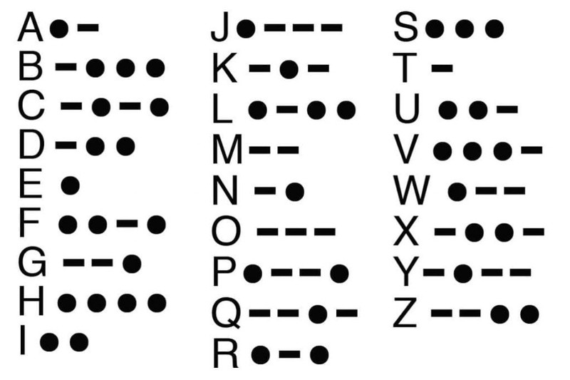

We're going to use a function and a map to covert English into Morse code.
There is a code sample in "snippets" to get you started
The snippet is a function. Within the function you define a map of inputs to outputs.
In our case, we want to map each letter to a corresponding Morse code.
Once your function is ready, you can use it! See the palette for an example of use
